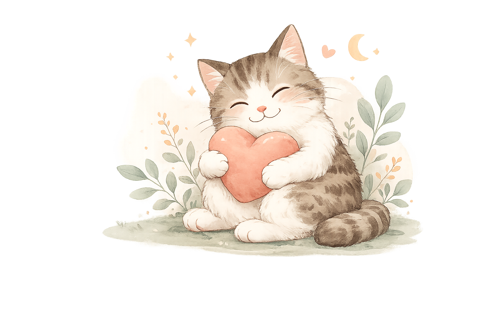
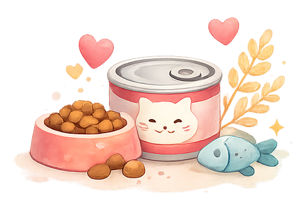
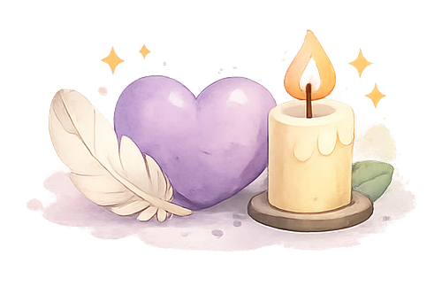

疾病知識
了解常見疾病、症狀與就醫時機， 守護貓咪健康。
For you and your cat. ♡
整理貓咪疾病、飲食、住院照護與悲傷支持，
讓飼主在需要時找到清楚而溫柔的資訊。

了解常見疾病、症狀與就醫時機， 守護貓咪健康。

學習成分分析、營養知識與餵食建議， 吃得安心又健康。
住院注意事項、探視建議與居家照護， 給貓咪最好的陪伴。

陪你面對離別與思念， 找到屬於自己的療癒方式。
🐾 每一隻貓咪，都是獨一無二的家人 ♡